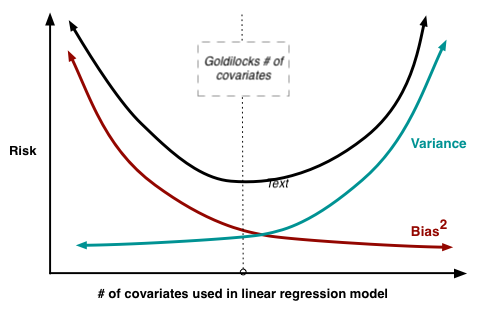

Lecture 5: The Bias-Variance Tradeoff
Learning Objectives
By the end of this lecture, you should be able to:
- Derive the bias-variance decomposition for squared loss
- Connect bias and variance to overfitting and underfitting
- Predict factors that affect bias and variance in linear regression
- Identify high-bias and high-variance settings through metrics
Overview
In the previous lecture, we:
- decided that risk (\(\mathbb E[ L(Y, f_\mathcal{D}(X)) ]\)) is the metric to quantify ``goodness’’ of a learned model \(f_\mathcal{D}\), and
- used estimated quantities of risk (e.g. via cross-validation) to select between different models.
As it stands right now, this model selection procedure is a bit like guess-and-check. We make a change to our model (i.e. add a covariate, change the model class, etc.), and then see if it improves our estimated risk.
This Module
The goal of this module is to make this process a bit more systematic by:
- quantifying factors that influence risk, and
- categorizing model changes based on how they affect these factors.
This lecture will focus on the first point. We will introduce the bias-variance decomposition of risk, which is one of the cornerstones of statistical learning theory. In subsequent lectures, we will introduce modeling and estimation procedures for linear models that specifically target these factors.
Setup
Given a learned model \(f_\mathcal{D}: \mathcal{X} \to \mathcal{Y}\), recall our definition of risk from the previous lecture:
\[ \mathcal R = \mathbb E[ L(Y, f_\mathcal{D}(X)) ] = \mathbb E\left[ \mathbb E[ L(Y, f_\mathcal{D}(X)) \mid \mathcal D \right]. \]
This lecture will focus specifically on the square loss (though the ideas will apply to other losses):
\[ \mathcal R = \mathbb E\left[ (Y - f_\mathcal{D}(X))^2 \right] \]
Crucially, risk is an expectation over all sources of randomness, including:
- the training data \(\mathcal D = \{(X_i, Y_i)\}_{i=1}^n \overset{\text{i.i.d.}}{\sim} P(Y, X)\)
- the test data \((X, Y) \sim P(Y, X)\)
- (any randomness in the estimation procedure).
Our goal is to decompose this expectation into semantically meaningful components that we can reason about. Before we do so, we need to introduce some terms/ideas:
Expected Label
For any given set of covariates \(X\), there is a distribution \(P(Y \mid X)\) over possible labels. We can consider the expected label:
\[ \bar{Y}(X) = \mathbb E[ Y \mid X ]. \]
- \(\bar{Y}(X)\) is sometimes called the regression function.
- If we had access to the regression function to make predictions, i.e. \(\hat Y = \bar{Y}(X)\), it would obtain minimum risk over all possible prediction rules \(\hat Y = f(X)\) (which we will prove in a moment!)
- However, the regression function is just a theoretical construct, and we will never know it. (If we did, we wouldn’t need to learn from data!)
Expected Model
Our learned model \(f_\mathcal{D}\) is a random variable because it depends on the (random) training data \(\mathcal D\). We can consider the expected model:
\[ \bar{f}(X) = \mathbb E[ f_\mathcal{D}(X) \mid X ]. \]
- Here, we are averaging over training datasets \(\mathcal D\), but nothing else.
- Intuition: imagine we were to train many models on different training datasets \(\mathcal D_1, \ldots, \mathcal D_M\). Each model will make a different prediction because they are trained on different data. The expected model \(\bar{f}(X)\) is the average of these predictions.
Warmup Decomposition (Estimation versus Prediction Error)
To decompose risk into multiple meaningful terms, we are going to play a mathematician’s favorite trick: adding zero.
More specifically, we are going to add and subtract a very specific quantity, the expected label \(\bar{Y}(X)\), within the square loss portion of risk:
\[ \mathcal R = \mathbb E\left[ (Y - f_\mathcal{D}(X))^2 \right] = \mathbb E\left[ \left( Y \overbrace{- \bar{Y}(X) + \bar{Y}(X)}^{= 0} - f_\mathcal{D}(X) \right)^2 \right] \]
So far, this is dumb. But watch what happens when we group terms…
\[ \mathcal R = \mathbb E\left[ \left( \underbrace{(Y - \bar{Y}(X))}_{A} + \underbrace{(\bar{Y}(X) - f_\mathcal{D}(X))}_{B} \right)^2 \right] \]
… and then expand the square into \(A^2 + 2AB + B^2\). After simplifying…
(see steps here)
\[\begin{align*} \mathcal R &= \mathbb E\left[ A^2 + B^2 + 2AB \right] \\ &= \mathbb E\left[ A^2 \right] + \mathbb E\left[ B^2 \right] + 2\mathbb E\left[ AB \right] \end{align*}\]
Consider \(\mathbb E\left[ AB \right] = \mathbb E\left[ (Y - \bar{Y}(X))(\bar{Y}(X) - f_\mathcal{D}(X)) \right]\). Applying the tower property, we have that:
\[ \mathbb E\left[ AB \right] = \mathbb E\left[ \mathbb E\left[ (Y - \bar{Y}(X))(\bar{Y}(X) - f_\mathcal{D}(X)) \mid X, \mathcal D \right] \right]. \]
Within the inner expectation, \(Y\) is the only random term after conditioning on \(\mathcal D\) and \(X\). Since \(Y\) is independent of our training data, we have that \(\mathbb E[ Y \mid X, \mathcal D ] = \mathbb E[ Y \mid X ] = \bar{Y}(X)\). Therefore,
\[\begin{align*} \mathbb E\left[ AB \right] &= \mathbb E\left[ \mathbb E\left[ (Y - \bar{Y}(X))(\bar{Y}(X) - f_\mathcal{D}(X)) \mid X, \mathcal D \right] \right] \\ &= \mathbb E\left[ \left( \mathbb E[ Y \mid X, \mathcal D] - \bar{Y}(X) \right) \left( \bar{Y}(X) - f_\mathcal{D}(X) \right) \right] \\ &= \mathbb E\left[ (\bar{Y}(X) - \bar{Y}(X)) \left( \bar{Y}(X) - f_\mathcal{D}(X) \right) \right] = 0. \end{align*}\]
Thus, the cross term vanishes, and we are left with
\[ \mathcal R = \mathbb E\left[ A^2 \right] + \mathbb E\left[ B^2 \right].\]
Plugging back in the definitions of \(A\) and \(B\)…
… we get that
\[ \mathcal R = \underbrace{\mathbb E\left[ \left( Y - \bar{Y}(X) \right)^2 \right]}_\text{irreducible error} + \underbrace{\mathbb E\left[ \left( \bar{Y}(X) - f_\mathcal{D}(X) \right)^2 \right]}_\text{estimation error} \]
Estimation versus Irreducible Error
I claim these two terms have intuitive interpretations:
The first term, the irreducible error, quantifies the inherent uncertainty in the response variable. Even if we were to perfectly know the conditional distribution \(P(Y \mid X)\), we would not be able to perfectly predict \(Y\) from \(X\) due to some inherent randomness in \(Y \mid X\).
The second term, the estimation error, quantifies how far off our learned model \(f_\mathcal{D}\) is from the optimal prediction rule \(\bar{Y}(X)\). It quantifies how well our learned model approximates the regression function; i.e. the optimal prediction rule.
The irreducible error is independent of our model/learning procedure. In general, we have no control over this term; it’s always there.
Technically, we can reduce the “irreducible” error by expanding our set of covariates \(X\).
Consider, for example, if we are trying to predict the temperature outside \(Y\) given the time of day \(X\). If we were to add the additional covariate of the day of the year \(X'\), then \(E[Y \mid X, X']\) would be a better predictor of \(Y\) than \(E[Y \mid X]\) alone.
The estimation error is the term we control with our model/estimation/prediction procedures. It will always be non-negative because we can only estimate \(\bar Y(X)\) so well from limited data.
I also claim that this decomposition proves my earlier statement that the regression function \(\bar{Y}(X)\) is the optimal prediction rule.
Why?
- The first term, the prediction error, does not depend on our model \(f_\mathcal{D}\) at all. It is a property of the data distribution \(P(X, Y)\), and it is non-negative.
- The second term, the estimation error, is non-negative because it is an expectation of a squared term. It will be minimized when it equals zero, which happens when \(f_\mathcal{D}(X) = \bar{Y}(X)\) for all \(X\).
The Bias-Variance Decomposition
Now for the real deal. Can we further decompose our estimation error term into meaningful components that we can reason about?
Let’s play the adding-zero trick again, this time adding and subtracting the expected model \(\bar{f}(X)\):
\[ \mathbb E\left[ \left( \bar{Y}(X) - f_\mathcal{D}(X) \right)^2 \right] = \mathbb E\left[ \left( \underbrace{\left( \bar{Y}(X) - \bar{f}(X) \right)}_{C} - \underbrace{\left( f_\mathcal{D}(X) - \bar{f}(X) \right)}_{D} \right)^2 \right]. \]
A similar game will play out after we (1) expand the square and (2) apply linearity of expectation: the cross term will vanish…
(details here)
If we take the cross term…
\[ \mathbb E\left[ CD \right] = \mathbb E\left[ \left( \bar{Y}(X) - \bar{f}(X) \right) \left( \bar{f}(X) - f_\mathcal{D}(X) \right) \right] \]
… and again apply the tower property (this time only conditioning on \(X\))…
\[ \mathbb E\left[ CD \right] = \mathbb E\left[ \mathbb E\left[ \left( \bar{Y}(X) - \bar{f}(X) \right) \left( \bar{f}(X) - f_\mathcal{D}(X) \right) \mid X \right] \right] \]
… then the only term in the inner expectation that is random (after conditioning on \(X\)) is \(f_\mathcal{D}(X)\). Since \(\bar{f}(X) = \mathbb E[ f_\mathcal{D}(X) \mid X ]\), we have that
\[\begin{align*} \mathbb E\left[ CD \right] &= \mathbb E\left[ \mathbb E\left[ \left( \bar{Y}(X) - \bar{f}(X) \right) \left( \bar{f}(X) - f_\mathcal{D}(X) \right) \mid X \right] \right] \\ &= \mathbb E\left[ \left( \bar{Y}(X) - \bar{f}(X) \right) \left( \bar{f}(X) - \mathbb E\left[ f_\mathcal{D}(X) \mid X \right] \right)\right] \\ &= \mathbb E\left[ (\bar{Y}(X) - \bar{f}(X)) (\bar{f}(X) - \bar{f}(X)) \right] = 0. \end{align*}\]… and we will be left with
\[ \underbrace{\mathbb E\left[ \left( \bar{Y}(X) - f_\mathcal{D}(X) \right)^2 \right]}_\text{estimation error} = \underbrace{\mathbb E\left[ \left( \bar{Y}(X) - \bar{f}(X) \right)^2 \right]}_\text{squared bias} + \underbrace{\mathbb E\left[ \left( \bar{f}(X) - f_\mathcal{D}(X) \right)^2 \right]}_\text{variance}. \]
Bias Versus Variance
Again, these two components have intuitive (and very important) interpretations:
Variance captures how dependent our learned model \(f_\mathcal{D}\) is on any particular training dataset \(\mathcal D\). High variance is bad, because it means that our predictions depend more on a particular training sample rather than generalizable patterns in the data.
Bias: captures how much “generalizable truth” can actually be learned by our statistical model/estimation procedure. High bias implies that, even if we had access to many training samples to “average out” the noise, we would still only be able to learn a poor approximation of the regression function \(\bar{Y}(X)\).

- Both bias and variance contribute to the risk/test error of our learned model.
- As you might imagine, these two terms are often in tension with one another.
- For example, a very simple model (e.g. linear regression with few features) will have high bias (it can’t capture complex patterns in the data), but low variance (it won’t change much if we retrain it on a different dataset).
- Conversely, a very complex model (e.g. linear regression with millions of features) will have low bias (it can capture complex patterns in the data), but high variance (it will change a lot if we retrain it on a different dataset).
- Both settings lead to high risk, but for different reasons.
- Optimizing risk requires balancing these two sources of error (e.g. finding the optimal number of features for the linear regression).

- We will discuss other factors that affect bias and variance in future lectures (e.g. regularization, basis functions, etc.).
Detecting High Bias and High Variance
If we want to make a modeling/estimation/prediction change to reduce risk, it’s important to know the source of the problem: is it high bias or high variance? As we will discuss in future lectures, these two regimes require different remedies, and applying the wrong remedy can make things worse!
Regime 1: High Variance
Alternative name: the overfitting regime
Symptom: training error is much lower than cross validation error
Remedies:
- Add more training data
- Reduce model complexity (complex models are prone to high variance)
- (More to come!)
Regime 2: High Bias
Alternative name: the underfitting regime
Symptoms: training error and cross validation error are both high
Remedies:
- Add features
- Use a more complex statistical model
- (More to come!)
Summary
- We can understand sources of risk via the bias-variance decomposition
- Estimation error (the portion of risk we can control) decomposes into bias and variance
- Bias reflects model assumptions and limitations
- Variance reflects sensitivity to training data
- Different remedies are appropriate for high bias versus high variance scenarios
- Understanding which regime you’re in should guide model selection strategies